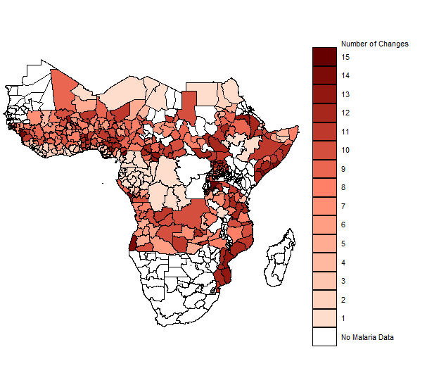

Community Indicators Project
The Economic Forecast Project
The Community Indicators Project measures the social, environmental, and economic factors that affect the quality of life in Santa Barbara county.

PhD Candidate
Department of Economics
University of California, Santa Barbara
Contact:
Office: North Hall 1127A
Email: dcullen@ucsb.edu
with Douglas G. Stiegerwald
Abstract: We study the behavior of cluster-robust test statistics in models with instrumental variables when cluster heterogeneity is present. Inference in a large number of papers using two-stage least squares regressions published in American Economics Association journals are driven by the presence of one or two influential clusters. We link a measure of cluster heterogeneity, the feasible effective number of clusters, to measures of influence. Using simulations, we demonstrate that high levels of cluster heterogeneity lead to coverage of less than 95% for 95% confidence intervals when using instrumental variables with panel data or with data that can be grouped into clusters. Using data from papers with two-stage least squares regressions published in American Economic Association journals, we show that the feasible effective number of clusters can be used as a pre-test to the sensitivity of two-stage least squares inference to influential clusters.

Abstract: I study the impact of changing weather patterns on the incidence of malaria and the effectiveness of malaria initiatives in Sub-Saharan Africa between the years 2000 and 2015. Combining malaria incidence with climate reanalysis I estimate the impact of malarious weather on malaria prevalence and analyze the changing efficacy of malaria prevention and treatment.
The Economic Forecast Project
The Community Indicators Project measures the social, environmental, and economic factors that affect the quality of life in Santa Barbara county.
UC Santa Barbara
The Economic Forecast Project provides reliable economic, demographic, health, and environmental data and analysis to our community of citizens, government, business, non-profit, and other users.

A short tutorial on how to work with ERA Reanalysis Data in Netcdf format in R and creating an interactive leaflet map of weather data.
A short tutorial mapping NFL stadiums and finding the closest stadium to every United States county.